Managing Seatables
If you are using the seatables, please follow the following:
Daily Checklist
Make sure freshwater is turned off at the end of the day. (This is a high pressure line and would flood the bunker if burst).
Check to make sure any heat sources in the tables are on top of silicone pads.
Check all plugs are working and the appropriate plugs are on emergency backup (red).
Make sure anything that could scratch the tables (oyster shells, ceiling tile) are on silicone pads.
Influent - check flow rate and position of all hoses. Pressure fluctuates with MSC-wide system use from day to day. Check that hoses are secure at the base.
Effluent float valve - Make sure the float valve is working. It should turn on when it is lifted up, and turn off when it falls down. If the float valve does not turn on, the sump tank will overflow and flood the bunker. If the float valve does not fall all the way down it will not turn off, which will burn out the pump. If the sump pump burns out, the sump tank will overflow and flood the bunker.
Effluent UV lights - If effluent is being treated, check that both the UV lights are working and the water is flowing in the correct direction.
Sea Table Drains - Make sure drains are clear of debris.
Effluent - write down the pressure on the valve before the blue filter and the valve after the blue filter.
Influent filtered water - write down the pressure on the valve before and after the filters on the incoming water.
Housekeeping - Make sure all lines are labeled (e.g. unfiltered seawater, filtered seawater, municipal freshwater, etc.), all lab equipment is labeled “Lotterhos”, and all equipment and tools are put out of sight (things tend to walk off).
Check for dead animals.
Weekly Checklist
Link to Weekly Checklist Table
Effluent - Clean the sump in a bucket of freshwater. First, lift up the float valve and drain most of the salt water from the sump tank down to normal stop level. Fill a “E” bucket (be careful, some buckets have had chemicals and not for placement in sump) with freshwater. Unplug the sump pump, and carefully place it in the bucket. Plug it back in, and use the float valve to turn it on and hold it up until the pump runs through the bucket of freshwater. Then unplug the pump again, place it back in the tank, and plug it in. Test the float valve again as described in “Daily checklist: Effluent float valve.”
Effluent - inspect sump pump hose for cracks, especially around where the hose clamps are. Make sure the hose clamps are tight.
Monthly Checklist
Use the shop vac to clean out the debris at the bottom of the sump.
Check for leaks along the main lines to the sea tables.
Check for leaks along the the freshwater line.
Check for leaks along the bottom pipe that runs below the sea tables to the sump pump
Check for leaks when the sump pump is running between the sump and the drainage pipe.
All motors (fans, pumps, etc), solenoids, and relays are inductive in nature. Do not plug these into power strips, plug them directly into the red receptacles. Check monthly.
Check the plugs for corrosion. Scrub with green abrasive pad.
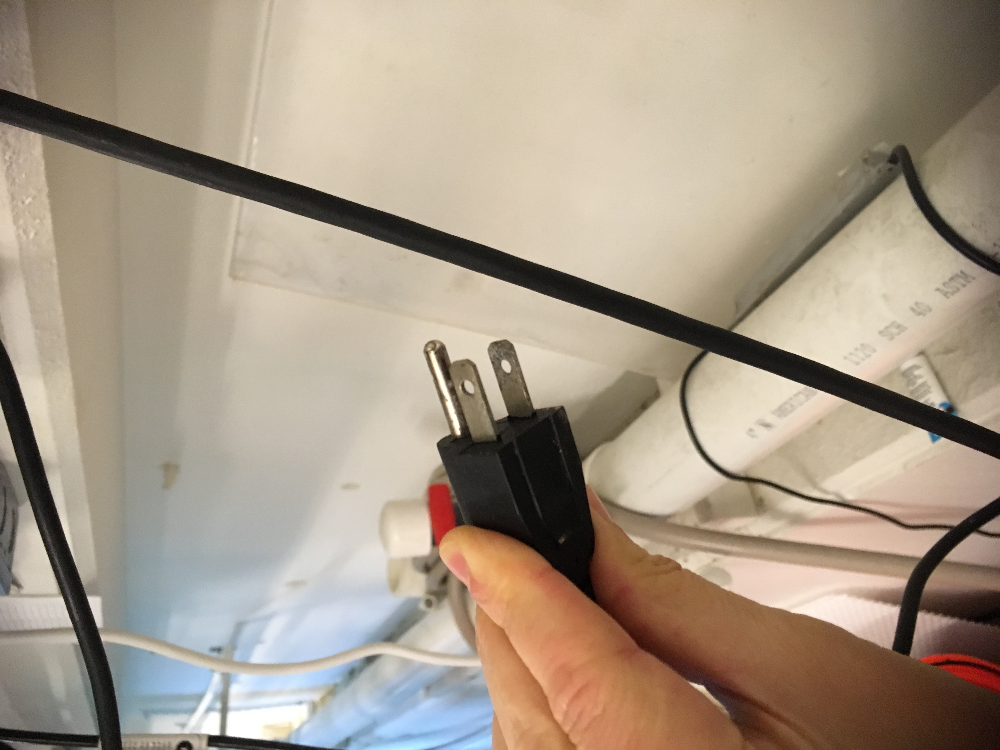
Unfiltered Seawater
- Unfiltered seawater has a central connection to a PVC pipe that runs across all the tables.
Filtered Seawater
- Filtered seawater is connected on the left side of the tables and currently only runs to the first table.
Changing Filters on Influent
- TO DO.
When to treat effluent
See MSC Best Practices Document. Usually we treat effluent for any animals not collected from Nahant or the Massachusetts Bay area.
Make sure that the valve to the filters is open and the other valve is closed.
Make sure that both UV lights are turned ON.
Changing Filters on effluent
- Changing the filter in the blue housing. Turn off the flow to the seatables, unplug the pump and UV lights. Close the valves. Open the housing and remove the filter. There is a replacement filter behind the blue housing. Grease the O-ring on the housing with silicon grease and change the filter. Set all the valves correctly, plug everything back in and turn everything back on. Check to make sure float valve is working, check for leaks in pipes and around filter housing.
Untreated effluent
Make sure that the valve to the filters is closed and the other valve is open.
Make sure the UV lights are unplugged.
Changing the UV lights
Read the instructions!
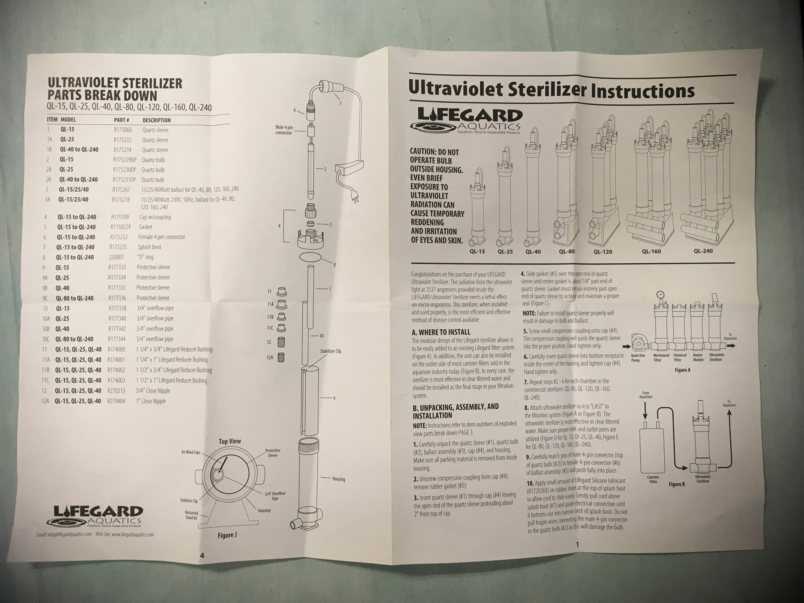 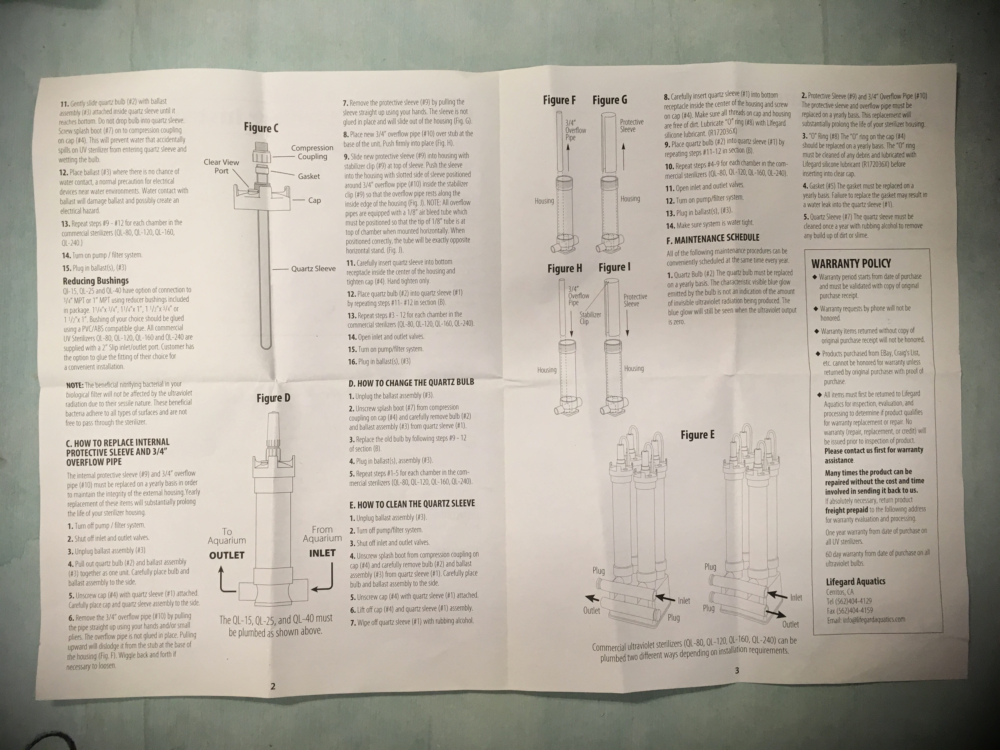
Signs there is a problem
If you see water in the quartz sleeve, this means it was not put together correctly and it leaked.
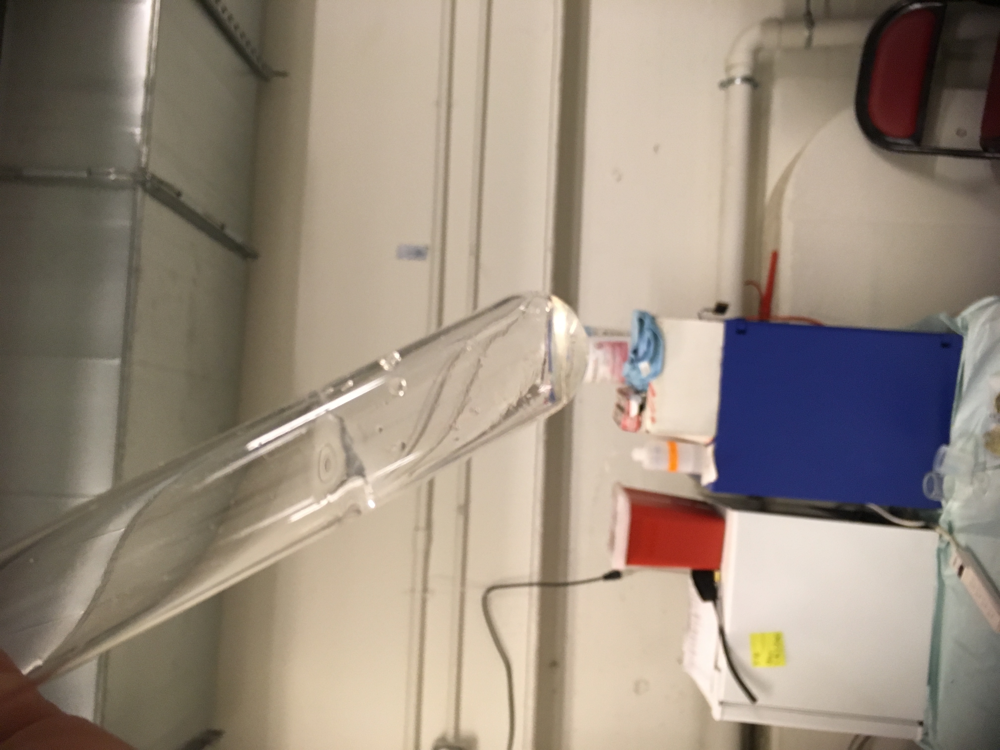
Also look for signs that the bulb is burning out by the black residue inside the quartz tube:
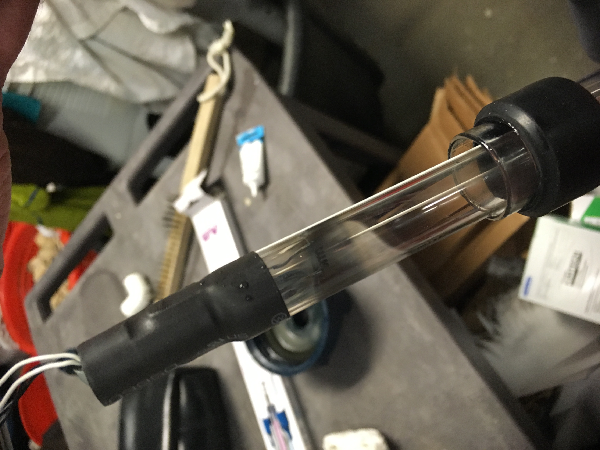
If the light is blue does that mean the UV light is working? Read the instructions to find the answer to this question. The answer will surprise you.
Changing the Bulb
Make sure when you change the bulb, to follow the instructions and use silicone grease. It can be found in a plastic box with a white top labeled “hot glue, silicone grease, etc.”
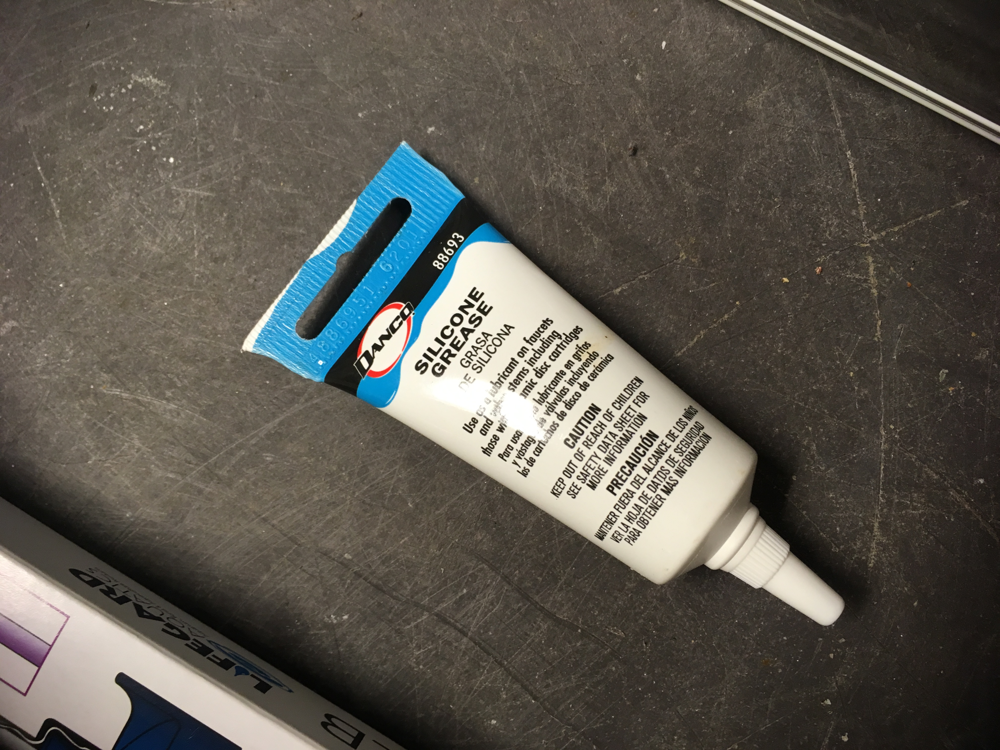
On the gasket (which should be changed once a year), make sure to put some silicone grease on the inside and smoosh it around with your finger:
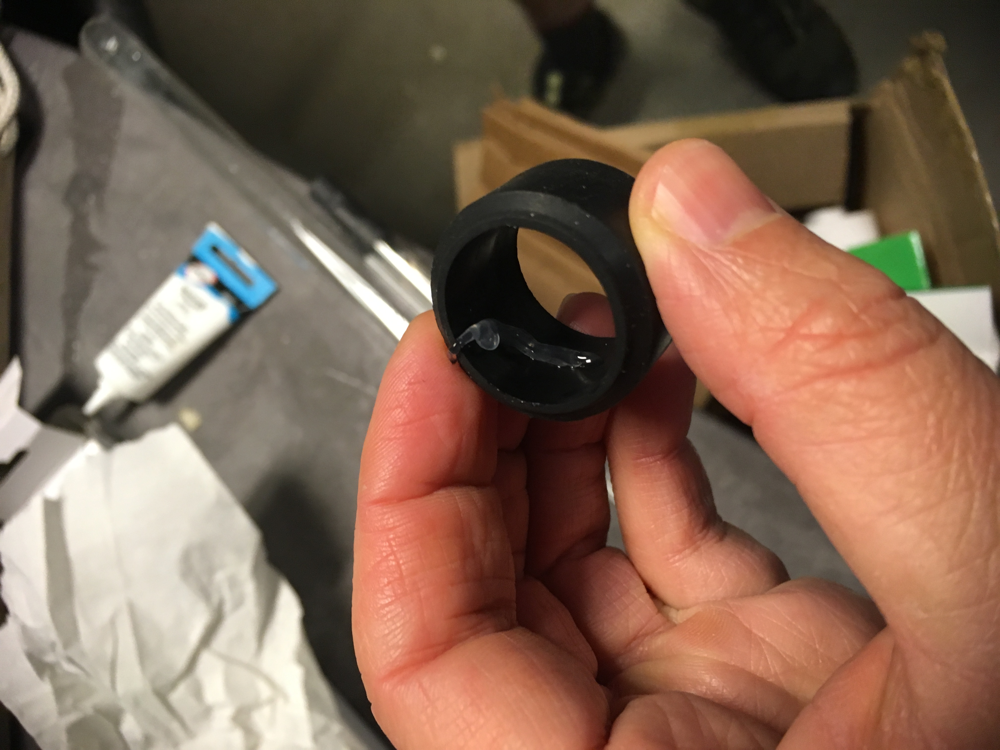
Make sure to follow these instructions as you put it back together:
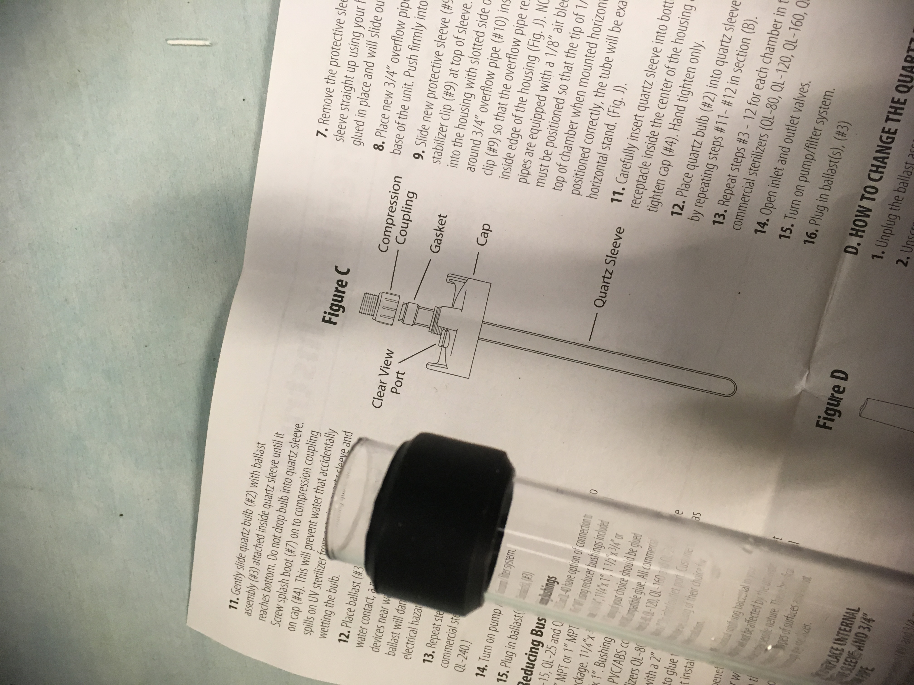
This is wrong:
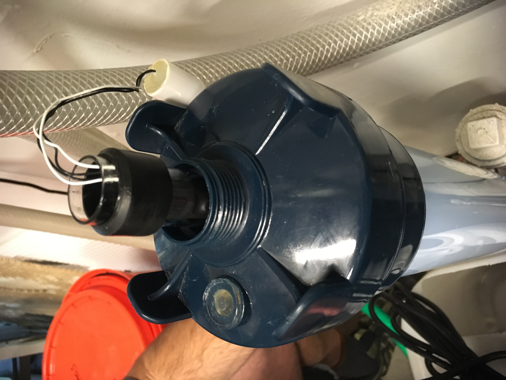
Make sure when you put it back together, screw in the coupling tight before attaching it to the housing:
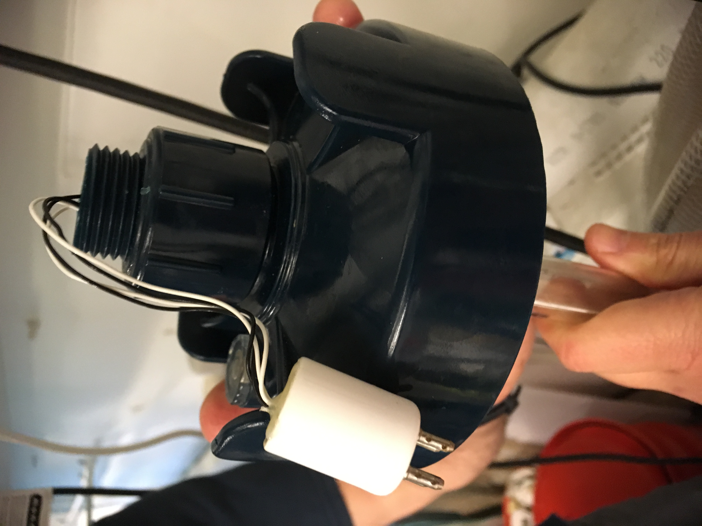
It’s hard to see, but check that the gasket is securely in place:
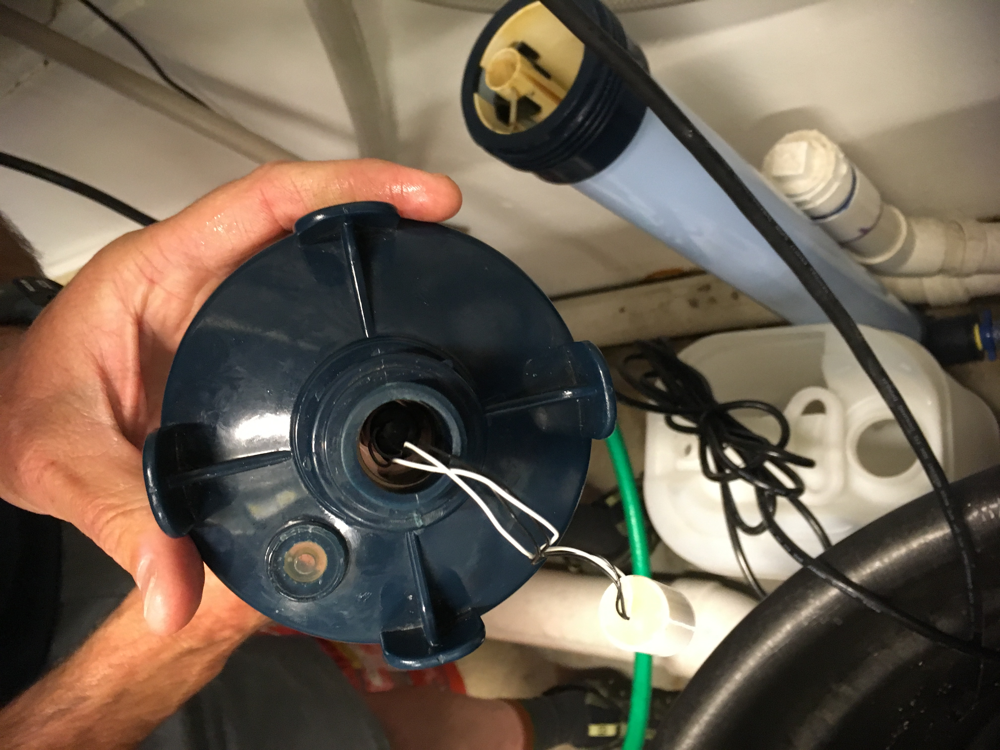
When you put the wires in, make sure not to let them get twisted by carefully stuffing them inside,
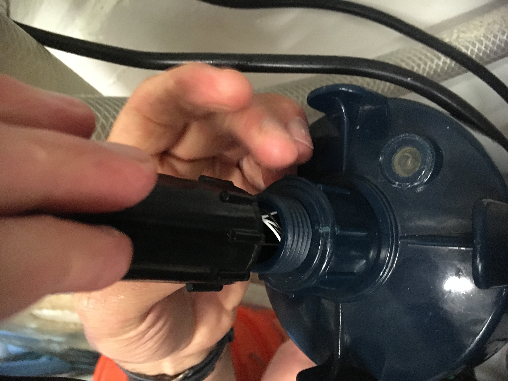
Then holding the top wire taught (don’t let it twist) while you screw the top on:
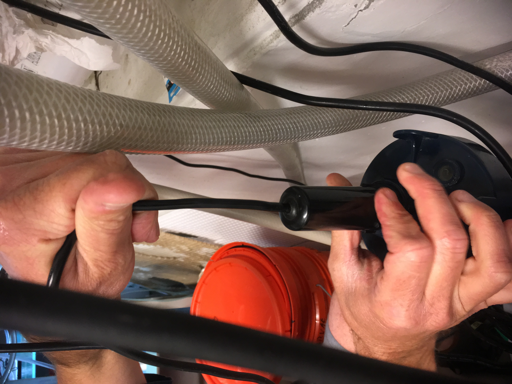
Annual maintenance for UV lights
Replace bulbs. If the light is blue does that mean the UV light is working? Read the instructions to find the answer to this question. The answer will surprise you.
Replace gasket. (#5 in instructions)
Replace O-ring. (#8 in instructions)
Clean the glass tubing per instructions